| Module Name | Lecture | Title | Description |
|---|---|---|---|
| Technology Stack Preparation | L0.1 | Optional GitHub Classroom & Version Control Basics Optional GitHub account setup | GitHub Classroom workflow; cloning and opening notebooks in Colab; basic version control concepts (commit, push, pull); when and why GitHub is used in applied GenAI work. |
| Technology Stack Preparation | L0.2 | Google Colab & Execution Environment Setup with technical orientation | Google Colab setup; notebook fundamentals; Python runtime basics; managing files, sessions, and outputs; running, saving, exporting, and submitting notebooks. |
| Language Probability and Representation | L1.1 | Course Orientation and Reproducible GenAI Setup | Course overview; GenAI system framing; AI disclosure files and accountability. |
| Language Probability and Representation | L1.2 | Language Probability and Generative Systems | Why language is probabilistic; prediction as generation; uncertainty in text; NLP as the foundation of GenAI. |
| Meaning and Structured Text | L2.1 | Mathematical Foundations Through Language Modeling | Vectors as meaning; probability and conditional likelihood; loss functions; entropy and perplexity introduced through language modeling. |
| Meaning and Structured Text | L2.2 | From Words to Structured Text | Foundations of text representation; tokenization and normalization; n-grams; static versus contextual representations; document structure awareness. |
| Prompting and Semantic Geometry | L3.1 | Prompting as System Design | Prompt engineering as probabilistic control; zero and few-shot learning; in-context learning; common failure modes. |
| Prompting and Semantic Geometry | L3.2 | Tokenization Embeddings and Semantic Geometry | Subword tokenization; embedding spaces; cosine similarity; semantic neighborhoods; semantic drift. |
AD698 - Applied Generative AI
Introduction to Generative AI & Business Applications
Nakul R. Padalkar
Boston University
March 12, 2024
Course Welcome
- Understand the breadth of generative AI technologies
- Explore core generative model architectures
- Gain insights into practical applications
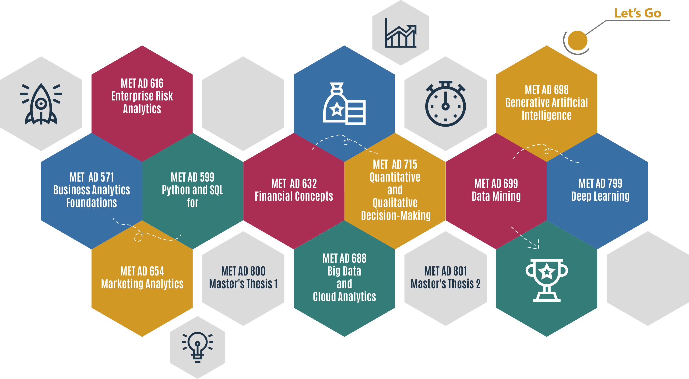
How to print Revealjs slides
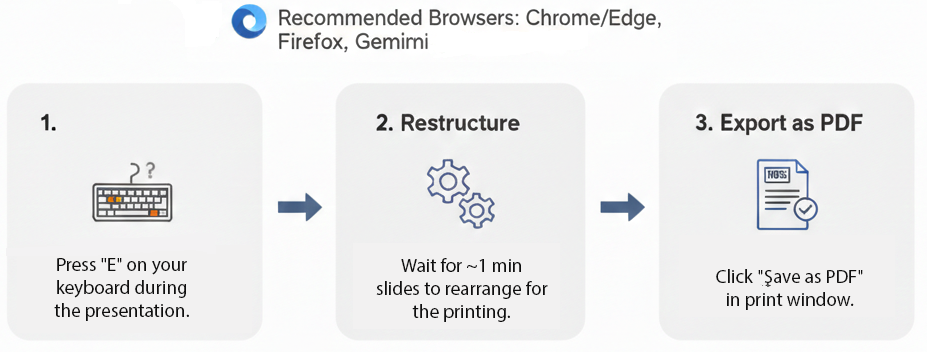
Course Schedule (tentative)
Course Schedule (tentative)
| Module Name | Lecture | Title | Description |
|---|---|---|---|
| Model Architectures | L4.1 | Transformers Attention and Context | Self-attention; positional encoding; scaling intuition; why transformers replaced RNNs and LSTMs. |
| Model Architectures | L4.2 | Training Paradigms and Fine-Tuning Pipelines | Pretraining versus fine-tuning; instruction tuning; dataset formatting; overfitting and data leakage risks. |
| Retrieval and Grounded Generation | L5.1 | Retrieval Augmented Generation Concepts | Chunking and indexing; embedding-based retrieval; grounding strategies; hallucination risks. |
| Retrieval and Grounded Generation | L5.2 | Designing Retrieval-Augmented Pipelines | End-to-end retrieval-augmented workflows; query design; citation tracing; system limitations. |
| Adaptation and Insight | L6.1 | Efficient Adaptation LoRA QLoRA and PEFT | Parameter-efficient fine-tuning; tradeoffs between prompting retrieval and adaptation; cost governance. |
| Adaptation and Insight | L6.2 | Semantic Search Clustering and Change Detection | Embedding-based clustering; similarity search; longitudinal semantic analysis across document collections. |
| Context and Multimodality | L7.1 | Context Windows Memory and Compression | Context limits; summarization; caching; memory strategies for long documents. |
| Context and Multimodality | L7.2 | Multimodal Generative Models and Structured Data | Vision-language models; multimodal inputs; tables figures and structured representations; enterprise use cases. |
Course Grading
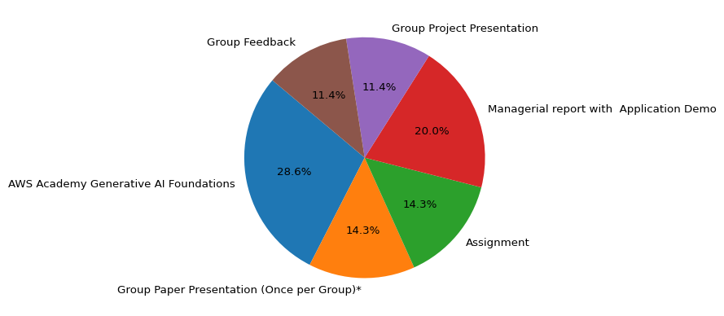
| Class Activity | Count | Points | Max Points |
|---|---|---|---|
| AWS Academy Generative AI Foundations | 1 | 100 | 100 |
| Group Paper Presentation (Once per Group)* | 1 | 50 | 50 |
| Assignment | 4 | 50 | 200 |
| Managerial report with Application Demo | 1 | 70 | 70 |
| Corpus Familiarization & Chatbot Scope | 1 | - | - |
| Text Structuring & Retrieval Units | 1 | - | - |
| Embeddings & Retrieval Baseline | 1 | - | - |
| Grounded Generation & Guardrails | 1 | - | - |
| Group Project Presentation | 1 | 40 | 40 |
| Group Feedback | 1 | 40 | 40 |
| Total | - | - | 500 |
Participation Points
- You are added to an AWS Academy Generative AI Foundations course in AWS Academy.
- There are self-paced 10 modules in the course.
- If you complete all modules, you will receive participation points for AWS academy.
- You are also added to AWS Learner Lab for hands-on practice.

GitHub Repository and Portfolio
- Lecture 0.1, Lecture 0.2, Lecture 0.3 videos cover basic portfolio creation using GitHub.
- Follow the video and submit the repository link in the assignment.
- This will be also used for submitting
- Assignments
- Projects
- Weekly Quizzes, Presentations, and Problems solving exercises AKA Labs
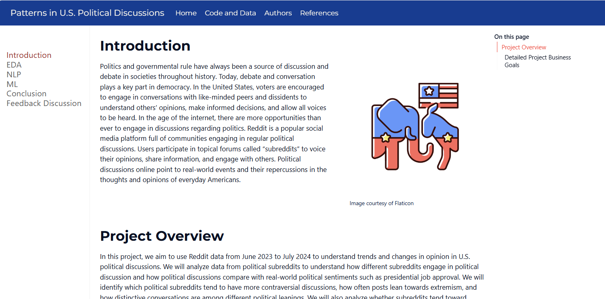
In class Presentations
- Look for the Labs page in each lecture folder (M0X/Lecture) for the list of papers and suggestions for the presentation.
- Each student group will deliver one research paper presentation during the semester.
- Presentation length: approximately 15 minutes
- Each presentation will be followed by guided class discussion
- All students are expected to read the assigned paper(s), regardless of whether they are presenting
- Presentations focus on:
- The problem the paper addresses
- The technical or conceptual contribution
- Limitations and assumptions
- Implications for building generative AI systems
- This component develops skills in critical reading, synthesis, and technical communication.
Individual Assignments
- Four individual assignments.
- Report (word or pdf) and code (jupyter notebook).
- These are more detailed and require more time to complete.
Group Project
- Lecture 0.1 and Lecture 0.2 videos cover basic portfolio creation using GitHub.
- Focuses on equipping students with the knowledge to explore a dataset and extract meaningful insights. Throughout this assignment, you’ll complete the following:
| Component | Points | Description |
|---|---|---|
| Project Milestones through GitHub | 70 | This includes Corpus Familiarization & Chatbot Scope, Text Structuring & Retrieval Units, Embeddings & Retrieval Baseline, Grounded Generation & Guardrails |
| Presentation | 40 | Effectively communicates the project findings and technical work. |
| Group Feedback | 40 | Includes peer feedback and team collaboration evaluation. |
| Total | 150 |
Course Site
- Design and content is subjected to change.
- All the assignments, quizzes, and projects will be posted on the course site.
- The course site is the main source of information for the course.
Office Hours & Consultation Sessions
- Look for office hours page on blackboard.
- Look for Consultation Sessions page on blackboard.
- Consultation Sessions: For detailed help on assignments and projects.
- Held separately on Saturday, time needs to be discussed.
- These will be review of labs and assignments.
- These will be held on Zoom.
- Recorded only if there is an audience.
Tools used in the course
- Python: dominant AI/ML language with simple, fast prototyping.
- PyTorch / TensorFlow: core deep‑learning frameworks for GenAI.
- Hugging Face Transformers: key library for LLMs, text generation, and RAG.
- OpenCV & PIL: essential for image/video processing in GenAI.
What is Generative AI?

Enterprise AI Landscape
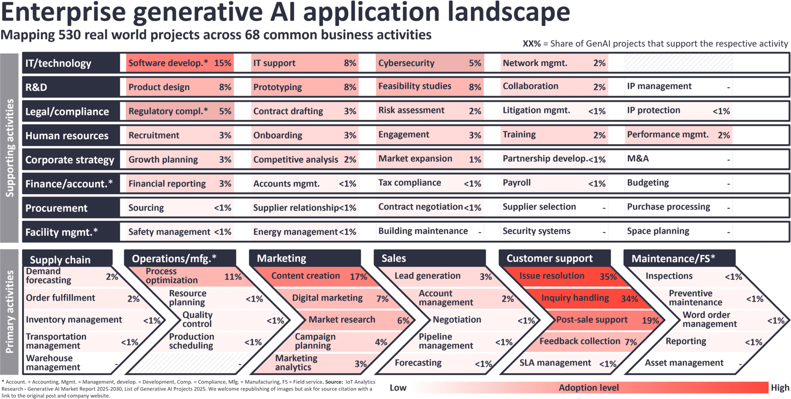
GenAI Core Characteristics
- Learning from existing data
- Generating novel, contextually relevant outputs
- Spanning multiple modalities (text, image, code, audio)
Evolution of Model Architecture
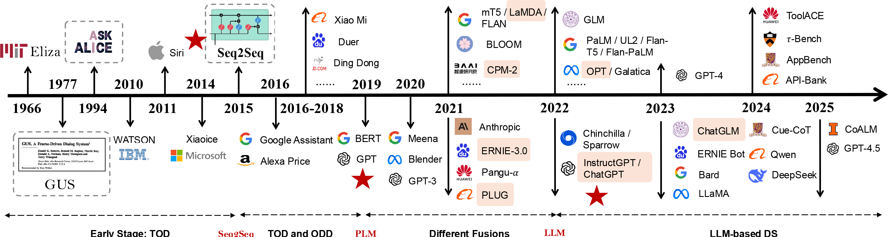
Key Generative Model Architectures
- Foundation Models and Algorithms
- Convolutional Neural Networks (CNNs)
- Recurrent Neural Networks (RNNs)
- Transformer Architecture
- Generative Adversarial Networks (GANs)
- Language Models
- GPT (Generative Pre-trained Transformer)
- BERT (Bidirectional Encoder Representations)
- Image Generation Models
- DALL-E
- Stable Diffusion
- Midjourney
- Multimodal Models
- Amazon Nova
- Meta Llama
- Gemini
- GPT
Simulation, Emulation, and AI
- Given a function/process that exists with complex logical pathways, can it be mimicked by computers?
- Economical transactions of a small city?
- Social interactions between a household?
- Weather patterns over a region?
- Train of thought of researcher doing their job?
- Simulation: The imitation of a process, function, or environment that could exist or at least makes sense.
- Artificial Intelligence: The implementation of systems that perform tasks that seemingly require human skills.
- Machine Learning: The use of algorithms and statistics to identify, act on, and/or mimic patterns.
- Deep Learning: The use of neural networks to create function approximators with machine learning patterns.
Deep Learning - History
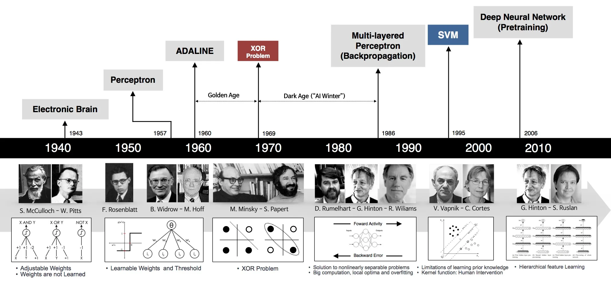
Artificial Intelligence - History

1956 - Dartmouth Conference: The Birth of Artificial Intelligence
Significance
- The term “Artificial Intelligence” was first coined at the Dartmouth Conference, with credit to John McCarthy, one of the event organizers.
- Foundational Moment for AI: This event is often considered the founding moment of AI as a field of study. It was the first time researchers from various disciplines came together to explore the concept of machine intelligence.
1958 - Perceptron by Rosenblatt at Cornell
- The perceptron, introduced by Frank Rosenblatt in 1958, was an early artificial neuron model inspired by the brain and helped launch modern neural networks.
- Despite its impact, it couldn’t handle non–linearly separable problems like XOR, a limitation that shaped future AI research.

1969 - Analysis of Perceptrons Minsky & Papert
- Minsky and Papert’s book Perceptrons analyzed the strengths and limits of Rosenblatt’s perceptron, emphasizing its inability to solve non‑linearly separable problems like XOR.
- Their critique slowed neural‑network research and contributed to the AI Winter.
- The work also paved the way for later breakthroughs, including backpropagation in the 1980s, which enabled training multilayer networks and revived interest in neural nets.
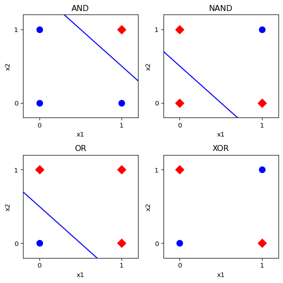
1974-1980 - 1^{\text {st }} AI Winter
1974–1980 — First AI Winter
- Period of reduced funding, interest, and institutional support for AI research
- Triggered by unmet promises of early symbolic AI systems
- Government and industry funding declined sharply
- Many AI labs were closed, downsized, or repurposed
Key Impacts
- Researchers shifted to adjacent fields (statistics, control systems, cognitive science)
- Machine learning and statistical methods progressed quietly
- Emphasized the gap between theoretical breakthroughs and practical deployment
- Established lasting lessons on expectation management in AI research
1980s — Backpropagation Popularized
Backpropagation is a general algorithm for training neural networks by computing gradients of a loss function with respect to model parameters efficiently.
- Core ideas
- Uses the chain rule to propagate error signals backward through layers
- Computes partial derivatives for each weight in the network
- Enables optimization via gradient-based learning (e.g., gradient descent)
- Why it was transformative
- Solved the credit assignment problem in multi-layer networks
- Made it computationally feasible to train deep (for the time) architectures
- Shifted neural networks from theoretical constructs to trainable systems
- Backpropagation unified learning across arbitrary network depth
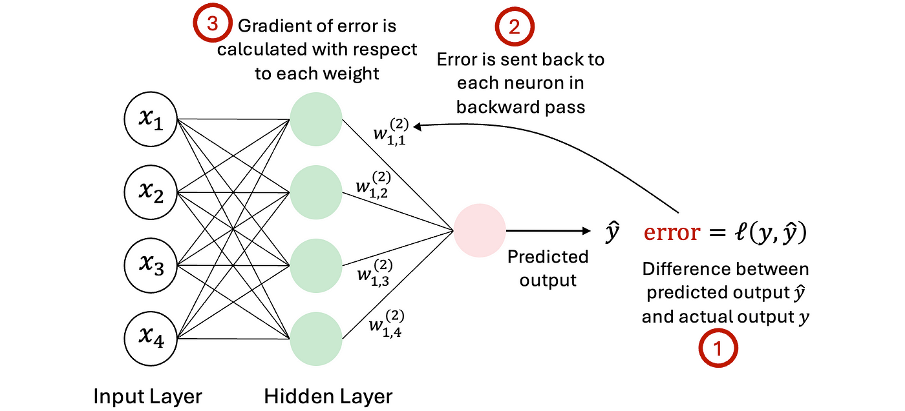
1986 - Multi-Layer Perceptron (MLP)
The 1986 backpropagation work demonstrated that multi-layer perceptrons (MLPs) could be trained effectively and reliably.
- What changed
- Hidden layers learned internal representations, not hand-engineered features
- Networks captured hierarchical structure in data
- Non-linear activations enabled expressive decision boundaries
- Key advances
- Demonstrated solutions to problems like XOR, impossible for linear models
- Showed learning was distributed across layers, not localized
- Provided empirical evidence that neural networks could generalize
- Why this mattered
- Shifted AI from rule-based reasoning toward representation learning
- Established the conceptual foundation for modern deep learning
1989 - Universal Function Approximation Theory
The Universal Approximation Theorem provided a formal theoretical justification for neural networks.
- Core result
- A feedforward network with:
- One hidden layer
- Finite neurons
- A non-linear activation function
- Can approximate any continuous function on a compact domain
- A feedforward network with:
- What the theorem does (and does not) say
- ✔ Networks are expressive enough in principle
- ✘ Does not guarantee efficient training
- ✘ Does not imply good generalization or data efficiency
- Why it mattered
- Countered claims that neural networks were inherently limited
- Legitimated neural networks as universal function learners
- Encouraged continued research despite computational constraints
Why Didn’t Neural Networks Take Over Immediately?
Despite strong theoretical foundations, neural networks did not dominate AI in the late 1980s and 1990s.
- Key constraints
- Limited data: Large labeled datasets were rare
- Insufficient compute: CPUs were slow; GPUs were not yet available
- Optimization challenges: Training was unstable and slow
- Tooling gaps: No mature frameworks for large-scale experimentation
- Practical consequence
- Neural networks were expressive in theory
- But difficult to train, scale, and deploy in practice
Theory vs Reality
- Capacity ✔
- Learnability ✔
- Scalability ✘
- Reliability ✘
1980s-1990s - The 2^{\text {nd}} AI Winter
- Unmet Expectations: Expert systems, initially promising, failed to generalize beyond narrow domains, leading to disillusionment.
- Economic Recession: The late 1980s recession led to budget cuts in AI research, shifting focus to more immediate technologies.
- Technological Limits: Insufficient computational power and algorithmic challenges hindered AI development.
- Reduced Interest: Funding and interest in AI dropped, leading to a slowdown in research and fewer innovations.
- Legacy and Recovery: Lessons from this period set the stage for the AI resurgence in the late 1990s, paving the way for modern AI advancements
2012 — AlexNet and the Deep Learning Breakthrough
AlexNet marked a decisive turning point in modern AI by demonstrating that deep neural networks scale effectively when paired with sufficient data and computation.
- What AlexNet showed
- Deep convolutional networks could vastly outperform classical vision pipelines
- End-to-end learning outperformed hand-crafted feature engineering
- Performance gains came from scale, not new theory alone
- Why ImageNet mattered
- 1.2M labeled images across 1,000 classes
- AlexNet reduced top-5 error by ~10 percentage points
- Established benchmarks as a driver of progress
- Infrastructure innovation
- Training split across two GPUs due to memory limits
- GPU acceleration enabled faster iteration and deeper architectures
- Marked the beginning of hardware–model co-design in AI
2017+ — Attention Is All You Need and the Transformer Era
The Transformer architecture revolutionized modern AI by replacing recurrence and convolution with attention, fundamentally changing how models process language and sequences.
- Core innovation
- Self-attention enables global context modeling
- Parallelizable training replaces sequential recurrence
- Scales efficiently with data and compute
- Why this mattered
- Dramatically improved performance on NLP tasks
- Enabled large-scale pretraining on unlabeled text
- Decoupled sequence modeling from strict ordering constraints
- From models to platforms
- Transformers became the backbone of:
- Language understanding (e.g., BERT-style models)
- Language generation (e.g., GPT-style models)
- Established the foundation for Large Language Models (LLMs)
- Transformers became the backbone of:
Innovations in Modeling
Research aims to identify:
- Key architectural drivers of model performance
- Scaling laws and emergent capabilities
- New use-cases enabled by model behavior
Common research directions:
- Model analysis via interpretability and controlled experiments
- New architectural components with useful properties
- Domain-aware training paired with scalable architectures
- Improved data and modality-specific learning strategies
Risks of GenAI
Despite its transformative potential, Generative AI introduces systemic risks to core societal foundations:
- Trust & information integrity
- Authenticity of digital records and identity
- Work, skills, and human purpose
These risks are amplified by today’s software environment:
- Ubiquitous data availability
- Always-on connectivity
- Cheap, scalable compute
Risk Mitigation
Mitigation is complex and often costly, requiring deliberate trade-offs in favor of long-term societal value:
- Privacy & security by design
- Transparency & accountability mechanisms
- Fairness, inclusion, and human dignity
- Reliability, validation, and certification
Addressing these challenges frequently requires prioritizing legal, ethical, and social safeguards over short-term efficiency or profit.
Generative AI and Knowledge Creation
Generative AI automates problems that were traditionally hard, skill-intensive, and expensive, producing outputs that are often good enough, scalable, and easily replicated.
This fundamentally lowers the cost of creating content that once required:
- Deep expertise
- Long training and experience
- Significant institutional or financial investment
Result: Knowledge production becomes faster, cheaper, and more widely accessible—but less tightly coupled to expertise.
Enablement vs. Erosion of Knowledge Signals
Enablement and Scale (Pros)
- Rapid synthesis across large and complex datasets
- Broad access to advanced analytical and creative capabilities
- Accelerated experimentation, learning, and innovation
- Empowerment of individuals and small teams at scale
Slop and Misinformation (Cons)
- Convincing text, images, audio, and video can be fabricated at scale
- Expertise can be mimicked without understanding or accountability
- Automated pipelines bypass editorial review and due process
- Long-term effects of widespread synthetic content remain uncertain
Key tension: Generative AI expands knowledge creation while weakening traditional signals of credibility, expertise, and trust.
Societal Impacts from GenAI
- Automation of Routine Tasks:
- Al is automating repetitive jobs like data entry and manufacturing, leading to job reductions in some areas.
- Impact on Skilled Jobs:
- AI is increasingly capable of handling complex task, potentially automating niche-skill/high-memory roles.
- GenAI has been used to lower early career demand due to perceived upper-level role empowerment.
- New Job Opportunities:
- While some jobs are lost, AI can also create new roles in areas like AI development and data science.
- Workers need reskilling to adapt, but some careers / demographics will have disproportionate impact.
- Impact on Psychology:
- Much like the internet (rise of ubiquitous connectivity), psychological impacts of ubiquitous Al is inconclusive.
Broad Risk Mitigation Efforts in AI
AI safety and risk mitigation have become strategic priorities across governments, industry, and civil society. These efforts reflect competing—but overlapping—interests in national security, economic competitiveness, and public trust.
- Key characteristics of the current landscape
- Fragmented but rapidly expanding standards ecosystem
- Mix of voluntary, industry-led initiatives and state-backed institutions
- Emphasis on risk anticipation, not just post-hoc compliance
- Global coordination trend
- Early leadership by a small number of states
- Rapid international replication and diversification
- Increasing public–private collaboration
Examples of Major Mitigation Initiatives
- AI Safety Institute (AISI): Nation-backed institutes focused on systemic AI risks, with early emphasis on national security and frontier models
- AISI Consortium (AISIC) (US): Formal public–private collaboration with industry to support safety research, evaluations, and standards
- Adobe Content Authenticity Initiative (CAI): Founded in 2019 to promote content provenance and authenticity tracking
- Coalition for Content Provenance and Authenticity (C2PA): Open technical standard for cryptographically signed content credentials and metadata
- NVIDIA Model Card++ / Trustworthy AI Efforts: Expanded model documentation covering intended use, testing scope, risks, and deployment guidance
- Open & Sovereign AI Safety Advocacy: Emphasis on secure self-hosting, open models, and safety practices for sensitive or regulated data contexts
Responsible AI: Core Principles
Responsible AI requires continuous evaluation, not one-time compliance. It integrates technical controls, organizational governance, and ethical commitments.
- Privacy & Security: Protect data rights, secure sensitive information, and resist misuse or unauthorized access
- Transparency & Accountability: Enable explainability, document design decisions, assign responsibility, and maintain oversight
- Fairness & Human Dignity: Identify and mitigate bias; support nondiscrimination and equitable outcomes
- Reliability & Certification: Ensure consistent performance, fitness for purpose, and ongoing validation in production
From Analytics to AI
Evolution of Decision Support Systems
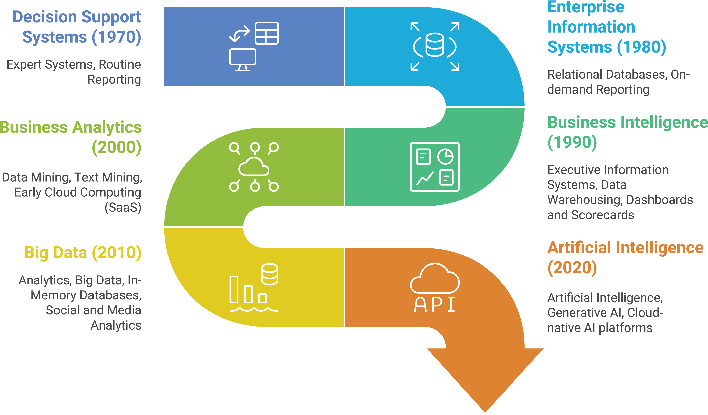
Types of Decision Support
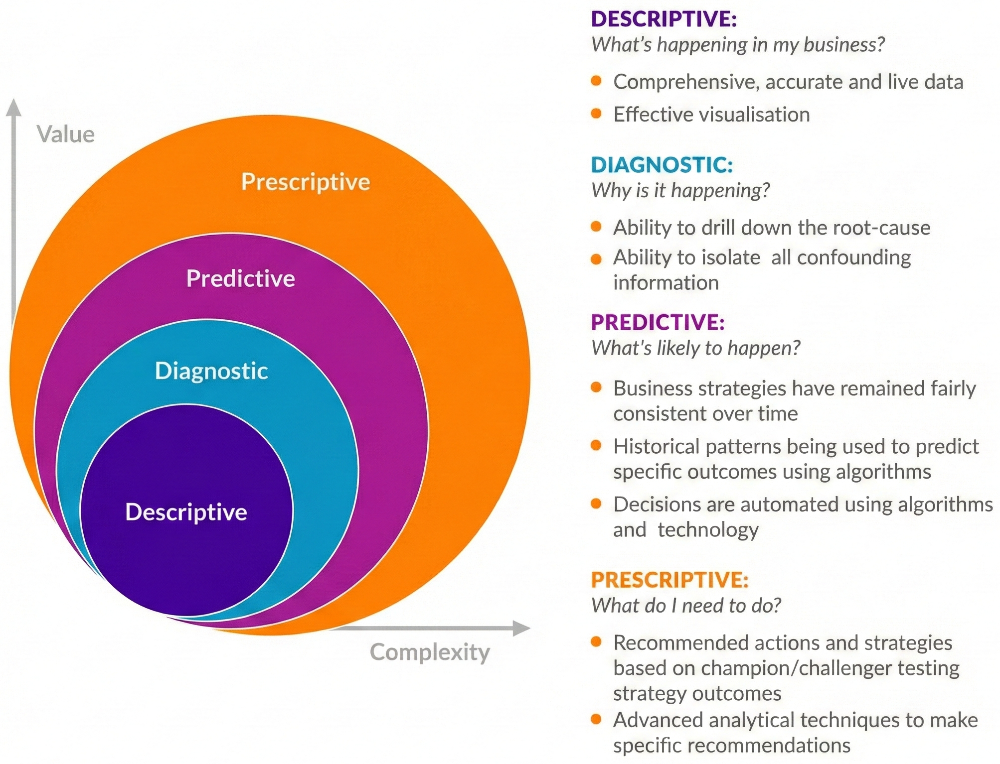
Anatomy of Text Mining and Analytics
Sources of data and Information
- Text Data is a form of unstructured data.
- Text Data is generated by humans and machines.
- Text Data is Massive Data
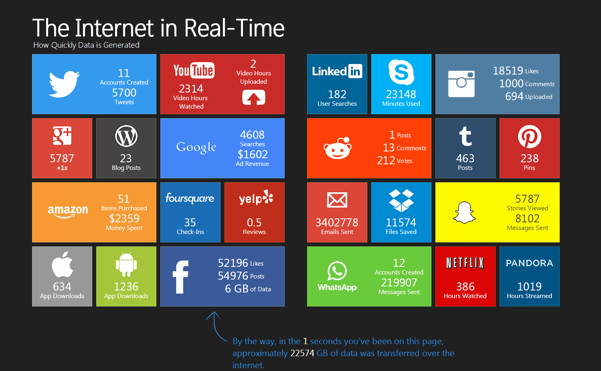
Information Backbone
All Information is stored in the form of data. Data is the backbone of information systems.
- In general Web Architecture drives this connection from the user to the data.
- Typically, a web application architecture diagram comprises three core components:
- Presentation layer / Client Layer
- Application Layer / Business Layer
- Data Layer
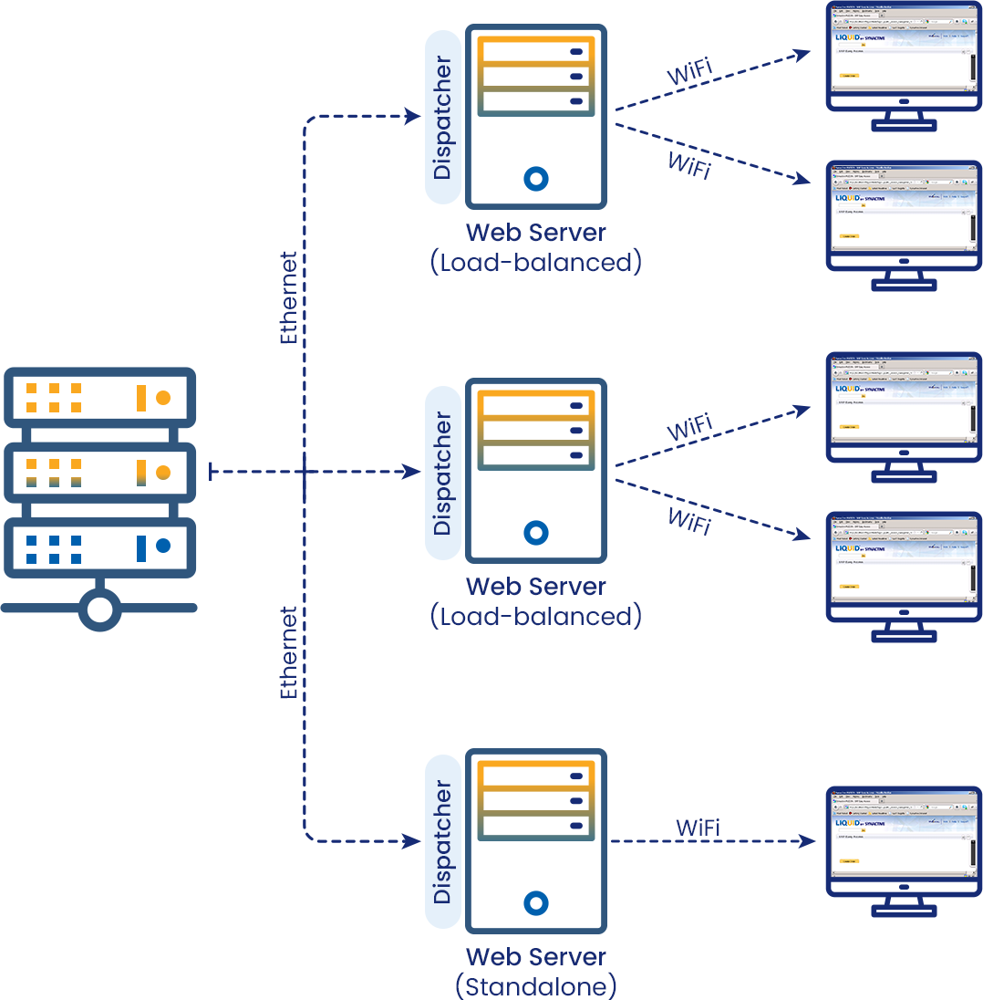
Massive Data Analytics
Note
Massive Data Analytics is the process of analyzing large data sets generated by social, business, operations, or technical activities to uncover hidden patterns, unknown correlations, market trends, customer preferences, and other useful business information (Shroff 2010).
- Behavioral data on people’s interactions with websites, mobile apps, and other physical and digital experiences
- Transactional data
- Social media data
- Metadata about interactions
- Data/Metadata related to the events, clicks
- Assists companies in creating value by improving revenue or reducing cost.
- Assists companies in gaining a deeper understanding of their customers by analyzing their online behavior.
- Provides insights for making decisions related to business planning, performance and strategy
- Informs predictive modeling, testing, optimization, market research, etc.
Big Data Analytics Process

- Data Collection: Data is collected from various sources such as websites, social media, mobile apps, etc. by web scraping or using APIs.
- Data Exploration: Data is explored to identify patterns, trends, and relationships. It is processed and analyzed to generate meaningful insights
- Analysis & Visualization: Exploring the data and variables will provide us with characteristics of the data.
- Synthesis and Enhancement: Upon analysis, we will eb presented with recommendations to enhance the “process”.
- Implementation: Once a recommendation is accepted the change needs to be implemented.
- Monitoring: The process is monitored to ensure that the change is effective.
Analytics Ecosystem
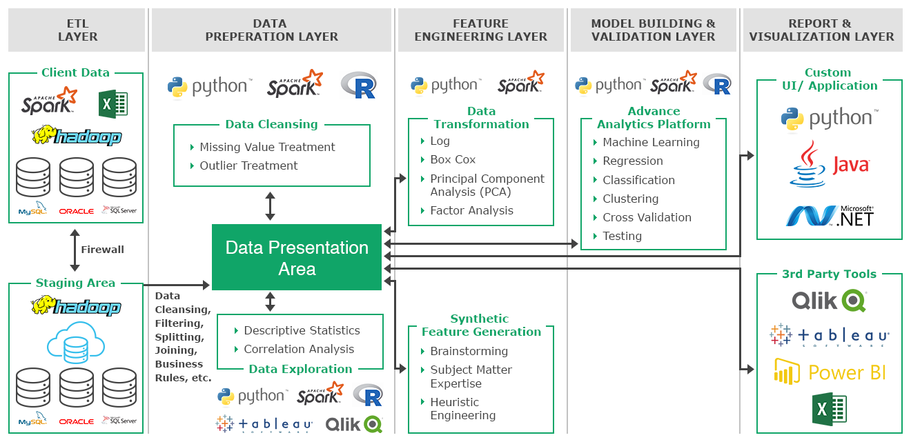
Data Collection and Acquisition
Data Collection and Acquisition
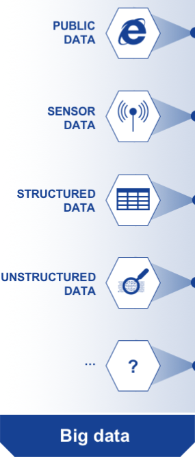
- Early Web Analytics:
- Initial tools analyzed server logs, which tracked details such as the host requesting a webpage.
- WebTrends: A popular tool for measuring website “hits” (visitor count).
- Modern Challenges:
- Understanding detailed user interactions beyond text-based content.
- Key considerations: Collecting fine-grained user interaction data.
- Collecting User Interaction Data:
- Early 2000s: Companies began using JavaScript to capture user interactions via browsers.
- Urchin: Acquired by Google in 2005, forming the basis of Google Analytics.
- JavaScript: Enables programs to execute in browsers and collect client-side data.
Cloud Platforms

- Amazon Web Services (AWS): Provides scalable cloud solutions for data storage, analytics, and AI services.
- Google Cloud Platform (GCP): Offers services like BigQuery and AI-based analytics for large-scale data analysis.
- Microsoft Azure: Features cloud-based data solutions, including Azure Data Lake and machine learning tools.
- IBM Cloud: Provides enterprise cloud solutions with integrated AI and analytics.
- Oracle Cloud: Focuses on cloud databases and scalable cloud infrastructure.
Data Collection Methods
| Points | Primary Data | Secondary Data |
|---|---|---|
| Meaning | Data collected by researcher himself | Data collected by other persons. |
| Originality | Original or unique information | Not original or unique information. |
| Adjustment | Doesn’t need adjustment, is focused | Needs adjustment to suit actual aim. |
| Sources | Surveys, observations, experiments | Internal records, Govt. published data, etc. |
| Type of data | Qualitative data | Quantitative data |
| Methods | Observation, experiment, interview | Desk research method, searching online, etc. |
| Reliability | More reliable | Less reliable |
| Time consumed | More time consuming | Less time consuming |
| Need of investigators | Needs team of trained investigators | Doesn’t need team of investigators |
| Cost effectiveness | Costly | Economical |
| Collected when | Secondary data is inadequate | Before primary data is collected |
| Capability | More capable to solve a problem | Less capable to solve a problem |
| Suitability | Most suitable to achieve objective | May or may not be suitable |
| Bias | Possibility of bias exist | Somewhat safe from bias |
| Collected by | Researcher or his agents | Persons other than who collects primary data |
| Precaution to use | Not Necessary | Quite necessary |
Structured and Unstructured Data
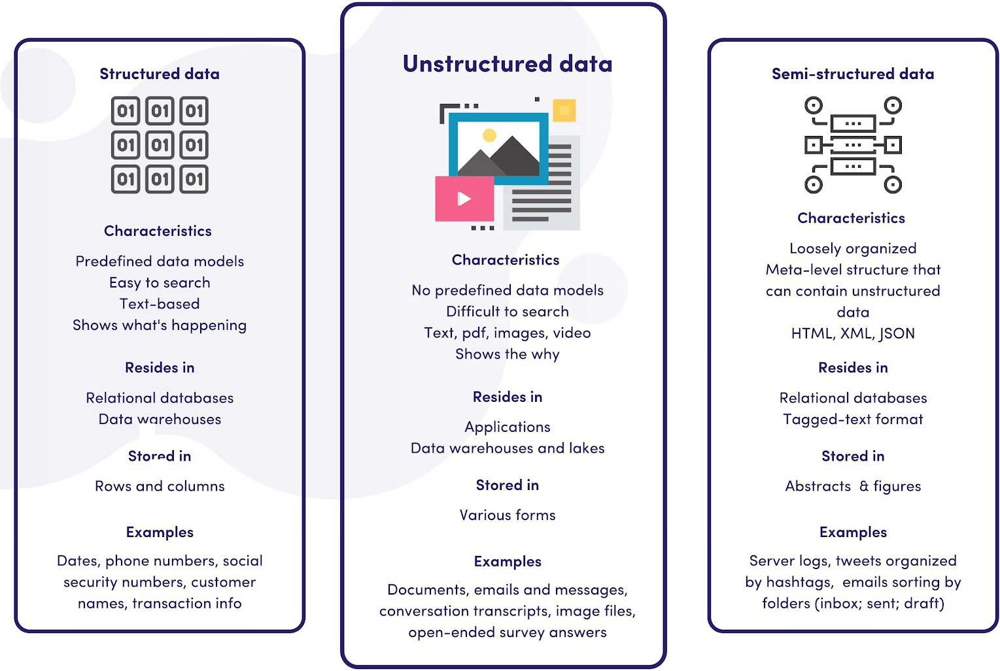
Data Organization and Management
Important
A Database Management System (DBMS) is a centralized software program that connects the database to various applications and displays data to the user or customer.
- In this course, you will be exposed to MySQL and PostgreSQL.
- We will utilize Google colab to run our code.
- You will also use PySpark, a highly versatile and lightweight database for local data exploration as needed.
- And Spark SQL for Big Data processing.
- Examples of relational DBMS systems:
- Oracle
- MySQL
- hadoop
- MongoDB
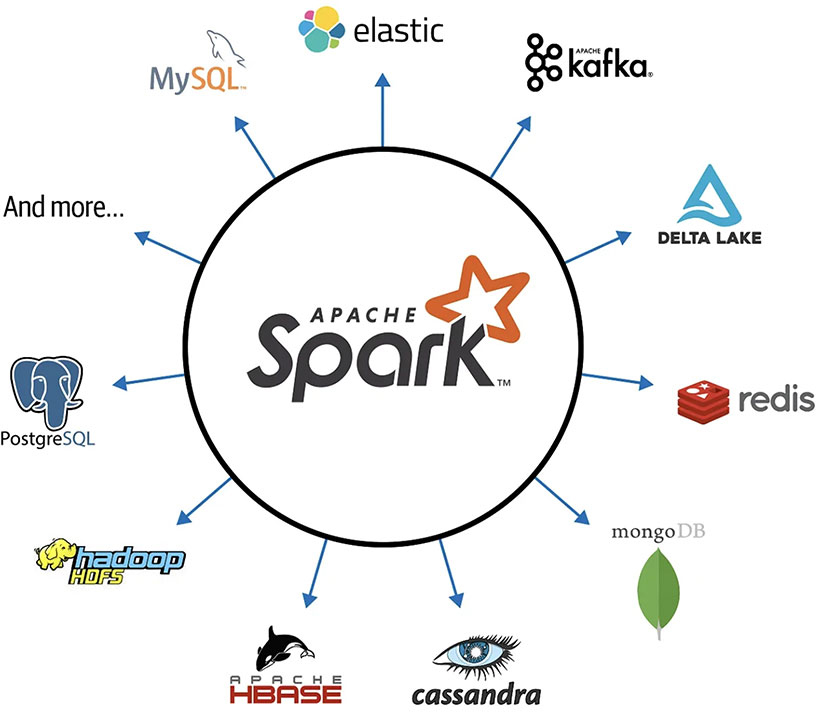
Anatomy of a Webpage
HTTP protocol


Web Page Rendering
- Go to https://www.bu.edu/met/ and right-click on the page and select
inspect. - This will open the
developer toolsin your browser, showing theDOM(Document Object Model) of the page
Web Scraping/ Web Crawling
The web as a data-set
- The Web link graph is arguably the most important modern directed network
- Directed network:
- Hyperlinks from page A to page B, while page B may not have a link to page A.
- Users can link from a page to another without worrying about reciprocity
- Web Nodes = ANYTHING with a URL (people, images, pages, videos, etc )
- Link Hyperlinks points from one URL to another.
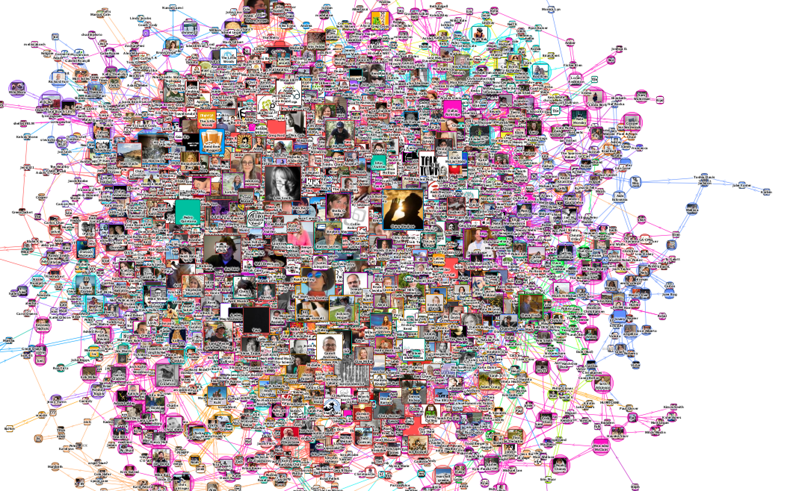
Web Crawlers
- Information on the Web is always changing and scattered across billions of pages served by millions of servers around the globe
- Web crawlers are programs that automatically download Web pages, to collect information that can be analyzed and mined in a
central location. - The primary application of crawlers are search engines
- A search engine takes the information collected by a crawler and creates an index
- The index maps content (keywords and phrases) to the pages, for rapid retrieval
- Search engine also rank results, to provide high quality results.
- Other applications: business intelligence, digital libraries, webometrics tools, research
- Malicious applications: harvesting email addresses and personal information for spam, phishing, and identity theft
How web crawlers work
- The basic concept of a crawler is simple: a breadth-first traversal of the Web graph, as in the BFS algorithm
- Start from a set of high-quality seed pages, recursively extracts the links within them to fetch more pages
- The queue of unvisited URLs (frontier)
- Fetch pages dequeued from the frontier, extract links and add them to the frontier
- Stores the page (and other extracted info, i.e index terms) in a repository.
- Devil in the details: complications due to scalability, page revisit scheduling, spider traps, canonical URLs, robust HTML parsing, and the server ethics
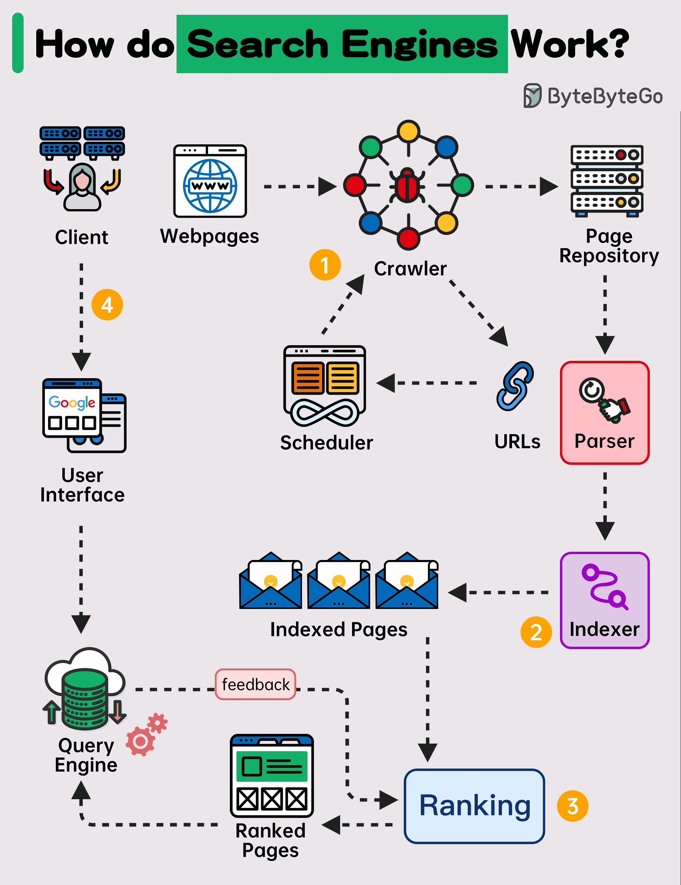
Web and Cloud Data Sources
- Internal Data: Data generated by systems within a company or its data centers.
- Digital Analytics Data: Behavioral and transactional data from websites, social networks, emails, mobile devices, IoT, and emerging digital formats.
- Social Data: Digital data from social media, capturing user inputs, behaviors, and transactions.
- Syndicated Research Data: Surveyed or sampled data on audience behaviors, attitudes, and beliefs.
- Audience Data: Geographic and household-level information about specific populations.
- Financial Data: Details on cash flow, investments, creditworthiness, and household financials from public and private sources.
- B2B Data: Business-to-business (firmographic) data.
- Specialized Research Data: Custom or primary research insights on audiences, customers, and prospects.
- Television and Cable Data: Subscription-based records showing what content or ads viewers watched and when.
Cloud and Social Analytics Evolution
- AD Tech: Machines used data to rapidly serve the right ads to the right audience
- Personalization and Semantic Web: Focus on delivering personalization at scale
- Audience: What type of audience arrive - at your site, devices they use
- Acquisition: Where do they come from - Search, Blogs, Ad Campaigns
- Behavior: What do they do after they come to the site, which pages they visit
- Conversion: Are they meeting the Goals, e.g. Purchase Completed
- Multiple Channels and Attribution problem
- Custom Events – Google Tag Manager
APIs and Web Services
Introduction to APIs
- Application Programming Interfaces:
- the “developer-facing” part of a data pipeline/service
- APIs are essential for modern software development.
- They enable interoperability, integration, and efficient development.
- Think of it like…
- Electrical outlet: you just want electricity from it, without knowing details of Alternating/Direct Currents
- Water fountain: you just want water from it, without knowing details of how it’s pumped into the fountain
- Car: you can accelerate, brake, & reverse, w/o knowledge of the combustion engine
What Does an API Do?
- Bridge: It acts as a bridge between different software applications.
- Communication: Allows different software components to communicate and interact.
- Exposes endpoints for use by other developers, without requiring them to know the nuts and bolts of your pipeline/service
- Electrical outlet: endpoint is socket,
- Water fountain: endpoint is aerator,
- Car: endpoint is pedals, steering wheel.
Benefits and key concepts
- Benefits of Using APIs
- Efficiency: Reuse existing functionality, saving development time and effort.
- Integration: Programmatic nature integrates external services into your applications.
- Scalability: Allows applications to scale by utilizing external resources.
- Key Concepts
- Requests and Responses: APIs use requests to ask for data or perform actions & respond with the required information.
- Data Exchange: Data is exchanged in a structured format, commonly in JSON or XML.
- Functionality: Provides access to specific functions or features of a software or service.
Types of APIs
- Library APIs: APIs provided by programming libraries for specific tasks or functions.
- Operating System APIs: Enable interaction with the operating system’s resources & services.
- Hardware APIs: Interface with hardware components like cameras, sensors, or printers.
- Web APIs: Used for web-based apps & services. Accessed using HTTP requests.
- This is the case we are most interested in, since they allow us to gather data
- RESTful APIs
- SOAP APIs
- GraphQL APIs
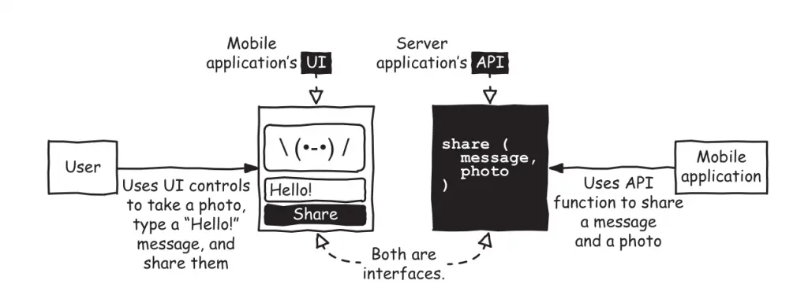
Closer look at Web APIs
Here are various types of web APIs, each with its own purpose. There are others but Restful APIs are the most common.
- RESTful APIs:
- Representational State Transfer (REST) APIs are based on architectural principles.
- Use standard HTTP methods (GET, POST, PUT, DELETE) to interact with resources.
- Uses URLs to identify resources, & data is often transferred in JSON or XML format.
- SOAP APIs:
- Simple Object Access Protocol (SOAP) APIs use XML for message formatting.
- Tend to be more rigid and have stricter standards compared to REST.
- Often used in enterprise-level applications and web services.
- GraphQL APIs:
- GraphQL allows clients to request specific data, reducing over-fetching or under-fetching of information.
- Clients define structure of the response, for more efficient & flexible data retrieval.
Public vs. Private APIs
- Open APIs (Public APIs):
- Accessible to external developers and the public with minimal restrictions.
- Typically require an API key or token for use.
- Enable third-party developers to extend platform functionality (e.g., Twitter, Facebook).
- Restricted APIs (Private APIs):
- Limited to specific users or organizations.
- Require special permissions or credentials for access.
- Used for internal systems or trusted partner integrations.
Common APIs for data gathering
Think of these as Project examples
- Social Media APIs: Access user data, post updates, or integrate social media features into applications.
- Payment Gateway APIs: Enable online payments and transactions.
- Maps APIs: Access maps, location data, and geospatial information.
- Weather APIs: Retrieve weather forecasts and historical data.
- News APIs: Aggregate news articles and content from various sources.
- Stock Market APIs: Access stock prices, market data, and financial information.
- E-commerce APIs: Integrate e-commerce platforms, product data, and payment processing.
Common Sources
- Twitter API: Used for sentiment analysis and trend monitoring; access is now limited.
- Facebook Graph API: Gathers data and insights on user interactions.
- Reddit API: Accesses Reddit content, user data, and community features.
- Google Maps API: Provides maps, geolocation, and routing data.
- GitHub API: Retrieves code repositories and collaboration data.
- OpenWeatherMap API: Supplies global weather data and forecasts.
- News API: Aggregates news for sentiment analysis and trends.
- NASA API: Offers space imagery, astronomy, and mission data.
- COVID-19 Data APIs: Tracks and analyzes pandemic data.
- Web Scraping Libraries: Tools like Beautiful Soup and Scrapy extract website data.
Example: Federal Reserve Bank of St. Louis.
- Base URL:
https://api.stlouisfed.org/fred/
- The endpoint:
series/observations
- The parameters:
- series_id: The unique ID of the economic data series (e.g.,
"GDP").
- api_key: Your personal API key obtained from the FRED website.
- file_type: Desired response format (
json,xml, etc.).
- series_id: The unique ID of the economic data series (e.g.,
- The example request:
https://api.stlouisfed.org/fred/series/observations?series_id=GDP&api_key=abcdefghijklmnopqrstuvwxyz123456&file_type=json
Note: Replace abcdefghijklmnopqrstuvwxyz123456 with your actual API key. You can obtain an API key by registering on the FRED website. (fred.stlouisfed.org)
Fred API in python
import requests
import pandas as pd
# Define the FRED API parameters
base_url = "https://api.stlouisfed.org/fred/series/observations"
api_key = "abcdefghijklmnopqrstuvwxyz123456" # Replace with your actual FRED API key
params = {
"series_id": "UNRATE", # Unemployment Rate series ID
"api_key": api_key,
"file_type": "json" # Request JSON format
}
# Send the request to the FRED API
response = requests.get(base_url, params=params)
# Check if the request was successful
if response.status_code == 200:
# Parse the JSON response
data = response.json()
observations = data.get("observations", [])
# Convert observations to a DataFrame
df = pd.DataFrame(observations)
# Save the data to a CSV file
file_path = "/data/UNRATE_data.csv"
df.to_csv(file_path, index=False)
print(f"Data saved to {file_path}")
else:
print(f"Failed to fetch data. Status code: {response.status_code}, Message: {response.text}")| realtime_start | realtime_end | date | value | |
|---|---|---|---|---|
| 0 | 2026-02-11 | 2026-02-11 | 1948-01-01 | 3.4 |
| 1 | 2026-02-11 | 2026-02-11 | 1948-02-01 | 3.8 |
| 2 | 2026-02-11 | 2026-02-11 | 1948-03-01 | 4.0 |
| 3 | 2026-02-11 | 2026-02-11 | 1948-04-01 | 3.9 |
| 4 | 2026-02-11 | 2026-02-11 | 1948-05-01 | 3.5 |
Reddit API
- Here are some examples of Reddit API Usage.
- Here are some useful resources:
SEC EDGAR API
import requests
from pathlib import Path
SEC_URL = (
"https://www.sec.gov/Archives/edgar/data/"
"320193/000032019325000079/aapl-20250927.htm"
)
OUTPUT_DIR = Path("./data/sec_10k")
OUTPUT_FILE = OUTPUT_DIR / "apple_2025_10k.html"
HEADERS = {
"User-Agent": "Academic Research - SEC 10K Download (email@example.edu)",
"Accept-Encoding": "gzip, deflate",
}
TIMEOUT_SECONDS = 30
# Create output directory
OUTPUT_DIR.mkdir(parents=True, exist_ok=True)
# Download
response = requests.get(
SEC_URL,
headers=HEADERS,
timeout=TIMEOUT_SECONDS
)
response.raise_for_status()
OUTPUT_FILE.write_bytes(response.content)
print("Downloaded:", OUTPUT_FILE.resolve())
print("File size (KB):", round(OUTPUT_FILE.stat().st_size / 1024, 2))Downloaded: D:\Repositories\AD698-generative-ai-for-BA\M1\data\sec_10k\apple_2025_10k.html
File size (KB): 1484.58What We Did in This Lecture
- Defined Generative AI and its scope
- Positioned GenAI within the history of AI and NLP
- Shifted from model-first to data-first thinking
- Introduced web datasets and APIs as primary text sources
This lecture focused on where text comes from, not how models work.
Key Takeaway
- Generative AI begins with data
- Most NLP failures start before modeling
- APIs and datasets define:
- Scale
- Bias
- Coverage
- Limits of downstream models
Important
If you cannot explain your data source, you cannot explain your model.
Where We Go Next
Lecture 2: Natural Language Processing with Neural Networks
- Why classical text features fail
- How text becomes vectors
- Embeddings as the bridge to neural models
- Setting the stage for transformers
Important
From text as documents \to text as representations
Between Now and Next Lecture
Explore one public text dataset or API
Download a small corpus
Inspect:
- Raw text
- Metadata
- Structure
You don’t need to model anything yet — just look at the data.
References
Shroff, G. 2010. Enterprise Cloud Computing: Technology, Architecture, Applications, Cambridge university press.
Wang, H., Wang, L., Du, Y., Chen, L., Zhou, J., Wang, Y., and Wong, K.-F. 2023. “A Survey of the Evolution of Language Model-Based Dialogue Systems,” arXiv Preprint arXiv:2311.16789. (https://arxiv.org/abs/2311.16789).